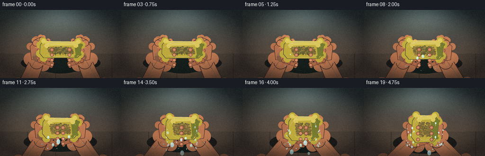
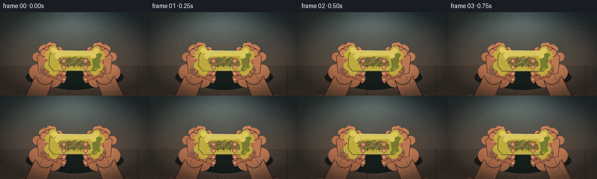
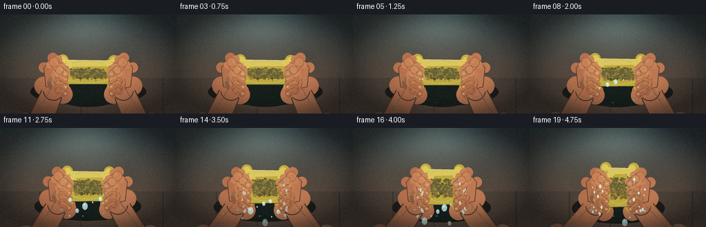
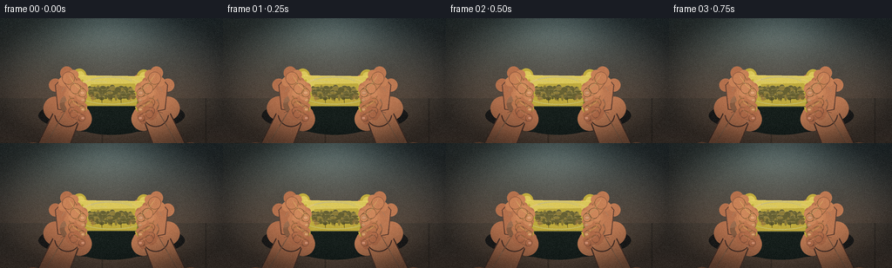
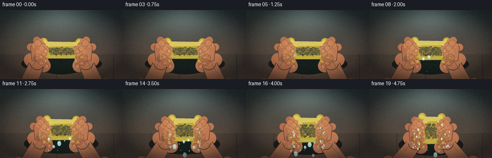
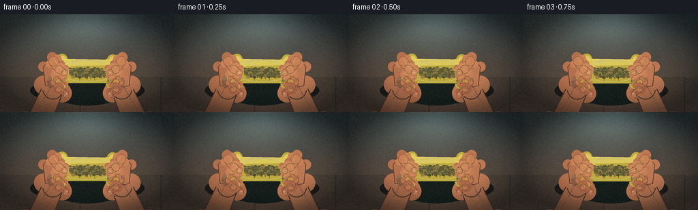
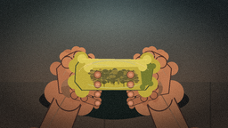
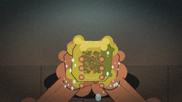
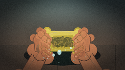

CODING AGENTS AS PIXEL WORLD MODELS
traex/DeepSeek-V4.1-Flash · mechanics_0015
点击播放 · 原生 RGB 像素
逐轮保存的候选
回放视频、检查图与代码变化。
每份候选均可单独播放。实际图片检查记录在下方工具轨迹中。
候选 01播放与检查图
点击播放 · 原生 RGB 像素


展开代码变化
--- 上一保存版本
+++ 本次保存版本
@@ -0,0 +1,453 @@
+from pathlib import Path
+import math
+import sys
+
+import numpy as np
+from PIL import Image, ImageDraw, ImageFilter
+
+from artifact_io import save
+
+
+W, H, N, FPS = 256, 144, 20, 4
+SS = 4
+CW, CH = W * SS, H * SS
+CASE = Path(__file__).resolve().parent
+RNG = np.random.default_rng(1502)
+
+
+def S(v):
+ return int(round(v * SS))
+
+
+def pts(values):
+ return [(S(x), S(y)) for x, y in values]
+
+
+def rounded_polygon(draw, points, radius, fill, outline=None, width=1):
+ """Polygon with softly rounded vertices."""
+ rp = max(1, int(radius * SS))
+ pp = pts(points)
+ draw.polygon(pp, fill=fill)
+ for p in pp:
+ draw.ellipse((p[0] - rp, p[1] - rp, p[0] + rp, p[1] + rp), fill=fill)
+ if outline:
+ draw.line(pp + [pp[0]], fill=outline, width=max(1, S(width)), joint="curve")
+
+
+def capsule(draw, p0, p1, r0, r1, fill, outline=None, width=0.7):
+ """Tapered capsule with round ends."""
+ x0, y0 = p0
+ x1, y1 = p1
+ dx, dy = x1 - x0, y1 - y0
+ length = max(0.01, math.hypot(dx, dy))
+ nx, ny = -dy / length, dx / length
+ poly = [
+ (x0 + nx * r0, y0 + ny * r0),
+ (x1 + nx * r1, y1 + ny * r1),
+ (x1 - nx * r1, y1 - ny * r1),
+ (x0 - nx * r0, y0 - ny * r0),
+ ]
+ rounded_polygon(draw, poly, min(r0, r1) * 0.92, fill, outline, width)
+ draw.ellipse((S(x0 - r0), S(y0 - r0), S(x0 + r0), S(y0 + r0)), fill=fill)
+ draw.ellipse((S(x1 - r1), S(y1 - r1), S(x1 + r1), S(y1 + r1)), fill=fill)
+ if outline:
+ draw.ellipse(
+ (S(x0 - r0), S(y0 - r0), S(x0 + r0), S(y0 + r0)),
+ outline=outline,
+ width=max(1, S(width)),
+ )
+ draw.ellipse(
+ (S(x1 - r1), S(y1 - r1), S(x1 + r1), S(y1 + r1)),
+ outline=outline,
+ width=max(1, S(width)),
+ )
+
+
+def gradient_background():
+ yy, xx = np.mgrid[0:CH, 0:CW].astype(np.float32)
+ u, v = xx / CW, yy / CH
+ # Warm bathroom counter, cool shadow behind the hands.
+ top = np.array([42, 54, 57], np.float32)
+ bottom = np.array([111, 82, 63], np.float32)
+ img = top[None, None] * (1 - v[..., None]) + bottom[None, None] * v[..., None]
+ light = np.exp(-((u - 0.48) ** 2 / 0.11 + (v - 0.02) ** 2 / 0.15))
+ img += light[..., None] * np.array([44, 52, 50], np.float32)
+ img += (np.sin(u * 14 + 0.8) * 1.8)[..., None]
+ # Countertop edge and ceramic tiling.
+ tile_y = 0.64
+ mask = v > tile_y
+ img[mask] = img[mask] * 0.78 + np.array([33, 40, 39], np.float32) * 0.22
+ grout = np.abs(((u * 4.3 + 0.03) % 1.0) - 0.5) > 0.485
+ grout &= mask
+ img[grout] *= 0.78
+ return np.clip(img, 0, 255).astype(np.uint8)
+
+
+BG = Image.fromarray(gradient_background(), "RGB")
+
+
+def add_texture(img, frame):
+ arr = np.asarray(img).astype(np.float32)
+ h, w = arr.shape[:2]
+ yy, xx = np.mgrid[0:h, 0:w]
+ # Fine sensor-like grain, deliberately strongest in the shadows.
+ noise = RNG.normal(0, 2.6, (h, w, 1))
+ lum = arr.mean(axis=2, keepdims=True)
+ arr += noise * (0.65 + 0.45 * (1 - lum / 255))
+ # Subtle chromatic variation and warm window glow from the upper left.
+ glow = np.exp(-(((xx / w - 0.22) / 0.34) ** 2 + ((yy / h - 0.05) / 0.43) ** 2))
+ arr += glow[..., None] * np.array([5.0, 4.0, 1.5], np.float32)
+ return Image.fromarray(np.clip(arr, 0, 255).astype(np.uint8), "RGB")
+
+
+def draw_shadows(draw, cx, half_w, half_h, progress):
+ # Long soft cast shadow under the hands and sponge.
+ draw.ellipse(
+ (S(cx - half_w - 42), S(102 - 10 + 3 * progress),
+ S(cx + half_w + 42), S(132 + 7 * progress)),
+ fill=(28, 27, 26),
+ )
+ draw.ellipse(
+ (S(cx - half_w - 7), S(100 - half_h * 0.08),
+ S(cx + half_w + 7), S(130 + half_h * 0.15)),
+ fill=(22, 31, 28),
+ )
+
+
+def sponge_shape(frame):
+ t = frame / (N - 1)
+ pressure = t ** 1.72
+ half_w = 42 - 16.8 * pressure
+ half_h = 28 + 13.2 * pressure
+ top = 65 - 8.5 * pressure
+ bottom = 101 + 11.7 * pressure
+ cx = 128 + 0.8 * math.sin(t * 8)
+ # A slight forward lean and asymmetric bulge under compression.
+ lean = 2.0 * pressure
+ return cx, half_w, half_h, top, bottom, lean, pressure
+
+
+def draw_sponge(base, frame):
+ cx, hw, hh, top, bottom, lean, pressure = sponge_shape(frame)
+ layer = Image.new("RGBA", (CW, CH), (0, 0, 0, 0))
+ d = ImageDraw.Draw(layer)
+ wobble = 1.2 + 4.8 * pressure
+ # Silhouette with compressed, bulging corners.
+ shape = [
+ (cx - hw + 5 + lean, top + 1),
+ (cx + hw - 5 + lean, top + 2),
+ (cx + hw + 2 + 2 * pressure, top + hh * 0.34),
+ (cx + hw - 1 + 2 * pressure, bottom - 7),
+ (cx + hw - 7, bottom + wobble * 0.3),
+ (cx - hw + 6, bottom + wobble * 0.45),
+ (cx - hw - 2 - pressure, bottom - 9),
+ (cx - hw - 1, top + hh * 0.32),
+ ]
+ rounded_polygon(d, shape, 8.0, (190, 169, 61, 255), (76, 81, 49, 255), 1.1)
+
+ # Dark side wall gives the sponge physical depth.
+ side = [
+ (cx + hw - 4, top + 4),
+ (cx + hw + 2 + 2 * pressure, top + hh * 0.33),
+ (cx + hw - 1 + 2 * pressure, bottom - 7),
+ (cx + hw - 10, bottom - 3),
+ (cx + hw - 13, top + 8),
+ ]
+ rounded_polygon(d, side, 3.0, (118, 123, 48, 255))
+
+ # Top plane; it visibly tilts and narrows as the palms close.
+ lid = [
+ (cx - hw + 6, top + 1),
+ (cx + hw - 5, top + 2),
+ (cx + hw - 10 + lean, top + 10),
+ (cx - hw + 13 + lean * 0.5, top + 11),
+ ]
+ rounded_polygon(d, lid, 5.0, (218, 199, 91, 255))
+ d.line(pts([lid[0], lid[1]]), fill=(242, 218, 117, 255), width=S(0.8))
+
+ # Pore network: elongated on the compressed sides, round on the front.
+ pores = RNG.normal(0, 1, (150, 2))
+ for i, (qx, qy) in enumerate(pores):
+ # Deterministic low-discrepancy placement inside the silhouette.
+ gx = ((i * 0.61803398875) % 1.0) * 2 - 1
+ gy = ((i * 0.41421356237 + 0.19) % 1.0) * 2 - 1
+ margin = 0.82
+ if abs(gx) > margin or abs(gy) > margin:
+ continue
+ px = cx + gx * (hw - 11) + lean * (1 - abs(gx)) * 0.4
+ py = top + 13 + (gy + 1) * 0.5 * (bottom - top - 20)
+ # Fewer, squashed holes in the overcompressed center.
+ if pressure > 0.65 and abs(gx) < 0.25 and (i % 3):
+ continue
+ rx = (1.25 + 2.8 * ((i * 37) % 11) / 10) * (1 - 0.18 * pressure)
+ ry = (0.75 + 2.3 * ((i * 19) % 13) / 12) * (1 + 0.30 * pressure)
+ if py > top + 12:
+ col = (105, 100, 47, 210) if (i % 4) else (151, 132, 57, 220)
+ d.ellipse((S(px - rx), S(py - ry), S(px + rx), S(py + ry)), fill=col)
+ if rx > 2.1:
+ d.arc(
+ (S(px - rx), S(py - ry), S(px + rx), S(py + ry)),
+ 195, 335, fill=(224, 207, 123, 185), width=max(1, S(0.35)),
+ )
+
+ # Compression creases concentrate around the middle.
+ for k in range(5):
+ x = cx - hw * 0.52 + k * hw * 0.26
+ bend = 2.4 * pressure
+ d.line(
+ pts([(x - 2, top + 17), (x + bend, top + 31 + k % 2 * 2), (x - bend, bottom - 13)]),
+ fill=(127, 113, 48, int(75 + 70 * pressure)),
+ width=max(1, S(0.35 + 0.25 * pressure)),
+ )
+ # Wet rim and top glints.
+ d.arc(
+ (S(cx - hw + 2), S(top + 2), S(cx + hw - 2), S(bottom - 2)),
+ 190, 345, fill=(255, 242, 164, 170), width=max(1, S(0.55)),
+ )
+ d.arc(
+ (S(cx - hw + 9), S(top + 3), S(cx + hw - 13), S(top + 24)),
+ 195, 326, fill=(255, 250, 201, 150), width=max(1, S(0.45)),
+ )
+ # Water film catches a cool highlight.
+ d.line(
+ pts([(cx - hw * 0.55, top + 7), (cx - hw * 0.13, top + 8.2)]),
+ fill=(255, 255, 227, 170), width=max(1, S(0.45)),
+ )
+ return layer, (cx, hw, hh, top, bottom, pressure)
+
+
+def draw_arm_and_hand(base, side, frame, sponge):
+ cx, hw, hh, top, bottom, pressure = sponge
+ layer = Image.new("RGBA", (CW, CH), (0, 0, 0, 0))
+ d = ImageDraw.Draw(layer)
+ t = frame / (N - 1)
+ inward = 8.6 * pressure
+ sign = -1 if side == "left" else 1
+ outer = 1 if side == "right" else -1
+ # The gripping palm tracks the sponge edge, then digs into its bulge.
+ palm_x = cx + sign * (hw + 4.5) - sign * inward
+ palm_y = 90 + 2.0 * pressure
+ wrist_x = 54 if side == "left" else 202
+ wrist_y = 146
+ forearm_angle = 0.10 * math.sin(t * 5 + (0 if side == "left" else 2))
+
+ skin = (178, 111, 76, 255) if side == "left" else (188, 120, 82, 255)
+ edge = (76, 48, 39, 255)
+ # Forearm enters from below at a diagonal, with a cool reflected edge.
+ capsule(d, (wrist_x, wrist_y + 18), (palm_x + sign * 4, palm_y + 20),
+ 18.0, 15.2, skin, edge, 1.2)
+ d.line(
+ pts([(wrist_x + outer * 7, wrist_y + 9), (palm_x + sign * 1 + outer * 6, palm_y + 17)]),
+ fill=(231, 157, 110, 125), width=S(1.0),
+ )
+
+ # Palm: wide heel tapering toward the fingers.
+ palm = [
+ (palm_x - sign * 14, palm_y + 20),
+ (palm_x + sign * 15, palm_y + 15),
+ (palm_x + sign * 18, palm_y - 13),
+ (palm_x + sign * 5, palm_y - 27),
+ (palm_x - sign * 15, palm_y - 18),
+ (palm_x - sign * 20, palm_y + 4),
+ ]
+ rounded_polygon(d, palm, 7.5, skin, edge, 1.1)
+ # Palm heel and thenar highlight.
+ d.ellipse(
+ (S(palm_x - 13), S(palm_y - 2), S(palm_x + 8), S(palm_y + 20)),
+ fill=(204, 135, 92, 150),
+ )
+ d.arc(
+ (S(palm_x - 12), S(palm_y - 14), S(palm_x + 13), S(palm_y + 15)),
+ 205, 334, fill=(235, 164, 117, 145), width=S(0.65),
+ )
+
+ # Four fingers curling over the near face. Fingertips converge under pressure.
+ finger_colors = [
+ (184, 117, 79, 255),
+ (190, 121, 82, 255),
+ (183, 114, 76, 255),
+ (172, 104, 70, 255),
+ ]
+ finger_y = [77, 88, 99, 109]
+ for i in range(4):
+ fy = finger_y[i] + 1.7 * pressure * (i - 1.5)
+ start = (palm_x - sign * 2, fy - 2)
+ knuckle = (palm_x - sign * 13 - inward * 0.25, fy + 1.5)
+ tip = (palm_x - sign * (28 + 4 * pressure) - inward * 0.38, fy + 7 + 2.2 * pressure)
+ # Fingers point toward the sponge center and visibly press into it.
+ capsule(d, start, knuckle, 5.6 - 0.35 * i, 5.1 - 0.28 * i,
+ finger_colors[i], edge, 0.65)
+ capsule(d, knuckle, tip, 5.0 - 0.32 * i, 4.1 - 0.22 * i,
+ finger_colors[i], edge, 0.65)
+ # Nail: tiny, wet, and subtly pink.
+ nx = tip[0] - sign * 1.4
+ d.ellipse(
+ (S(nx - 2.5), S(tip[1] - 2.0), S(nx + 2.5), S(tip[1] + 2.0)),
+ fill=(224, 154, 125, 225), outline=(126, 74, 65, 190), width=max(1, S(0.25)),
+ )
+ # Joint crease and upper-edge light.
+ d.arc(
+ (S(knuckle[0] - 4), S(knuckle[1] - 4),
+ S(knuckle[0] + 4), S(knuckle[1] + 4)),
+ 70 if side == "left" else 200, 250 if side == "left" else 380,
+ fill=(110, 64, 50, 155), width=max(1, S(0.3)),
+ )
+ d.line(
+ pts([(start[0], start[1] - 3.1), (knuckle[0], knuckle[1] - 2.9), (tip[0], tip[1] - 2.0)]),
+ fill=(242, 177, 127, 125), width=max(1, S(0.48)),
+ )
+
+ # Thumb rides over the front edge, selling the inward squeeze.
+ thumb_root = (palm_x + sign * 6, palm_y - 20)
+ thumb_mid = (palm_x - sign * (7 + inward * 0.2), palm_y - 27 + 2.0 * pressure)
+ thumb_tip = (palm_x - sign * (18 + 3 * pressure), palm_y - 21 + 4.4 * pressure)
+ capsule(d, thumb_root, thumb_mid, 7.0, 6.2, (197, 126, 84, 255), edge, 0.9)
+ capsule(d, thumb_mid, thumb_tip, 6.1, 4.9, (204, 133, 90, 255), edge, 0.85)
+ d.ellipse(
+ (S(thumb_tip[0] - 2.8), S(thumb_tip[1] - 2.2),
+ S(thumb_tip[0] + 2.8), S(thumb_tip[1] + 2.2)),
+ fill=(227, 154, 123, 225), outline=(124, 73, 63, 200), width=max(1, S(0.25)),
+ )
+ d.line(
+ pts([(thumb_root[0], thumb_root[1] - 4), (thumb_mid[0], thumb_mid[1] - 4),
+ (thumb_tip[0], thumb_tip[1] - 2.5)]),
+ fill=(248, 188, 139, 140), width=S(0.65),
+ )
+ return layer
+
+
+def draw_water(base, frame, sponge):
+ cx, hw, hh, top, bottom, pressure = sponge
+ layer = Image.new("RGBA", (CW, CH), (0, 0, 0, 0))
+ d = ImageDraw.Draw(layer)
+ t = frame / (N - 1)
+ # A transparent sheen over the compressed lower face.
+ d.arc(
+ (S(cx - hw + 8), S(top + 17), S(cx + hw - 8), S(bottom - 2)),
+ 30, 150, fill=(215, 249, 245, 110), width=max(1, S(0.55)),
+ )
+ # Beads swell and detach as pressure rises.
+ for i in range(10):
+ phase = max(0.0, (t - (0.25 + i * 0.055)) / 0.45)
+ if phase <= 0:
+ continue
+ x0 = cx - hw * 0.70 + (i % 5) * hw * 0.31
+ y0 = bottom - 9 + (i // 5) * 5
+ fall = 20 * phase + 31 * phase * phase
+ x = x0 + math.sin(phase * 8 + i) * (1.5 + 4 * phase)
+ y = y0 + fall
+ if y > 140:
+ continue
+ r = 0.9 + 1.5 * (i % 3) * min(1, phase * 4)
+ alpha = int(210 * (1 - max(0, phase - 0.78) / 0.22))
+ d.ellipse((S(x-r), S(y-r*1.35), S(x+r), S(y+r*1.35)),
+ fill=(193, 240, 238, alpha), outline=(241, 255, 249, alpha), width=max(1, S(0.25)))
+ d.ellipse((S(x-r*0.48), S(y-r*0.75), S(x+r*0.12), S(y-r*0.15)),
+ fill=(255, 255, 247, min(230, alpha+20)))
+ # Pressure bursts outward at the compressed sides.
+ if pressure > 0.42:
+ strength = (pressure - 0.42) / 0.58
+ for i in range(24):
+ ang = (i * 2.399 + frame * 0.15) % (2 * math.pi)
+ side = -1 if i % 2 else 1
+ x = cx + side * hw * (0.83 + 0.38 * strength) + math.cos(ang) * 8 * strength
+ y = top + 20 + ((i * 17) % 54) + math.sin(ang) * 10 * strength
+ r = 0.45 + 1.1 * ((i * 13) % 7) / 6
+ a = int(110 + 110 * strength)
+ d.ellipse((S(x-r), S(y-r*1.7), S(x+r), S(y+r*1.7)),
+ fill=(210, 248, 245, a))
+ return layer
+
+
+def draw_foreground(base, frame, sponge):
+ layer = Image.new("RGBA", (CW, CH), (0, 0, 0, 0))
+ d = ImageDraw.Draw(layer)
+ cx, hw, hh, top, bottom, pressure = sponge
+ # A few droplets on the counter, accumulating toward the end.
+ drops = [
+ (cx - 38, 119, 2.3), (cx + 24, 124, 1.8), (cx - 7, 128, 1.4),
+ (cx + 48, 116, 1.2), (cx - 60, 125, 1.0),
+ ]
+ for i, (x, y, r) in enumerate(drops):
+ amount = max(0.0, min(1.0, (frame / 19 - i * 0.075) * 3))
+ if amount <= 0:
+ continue
+ rr = r * amount
+ d.ellipse((S(x-rr), S(y-rr*0.55), S(x+rr), S(y+rr*0.55)),
+ fill=(87, 128, 121, int(150*amount)),
+ outline=(202, 239, 226, int(120*amount)), width=max(1, S(0.25)))
+ d.ellipse((S(x-rr*0.65), S(y-rr*0.36), S(x-rr*0.08), S(y+rr*0.02)),
+ fill=(244, 255, 247, int(170*amount)))
+ # Vignette.
+ yy, xx = np.mgrid[0:CH, 0:CW].astype(np.float32)
+ dist = ((xx / CW - 0.5) ** 2 + (yy / CH - 0.48) ** 2)
+ vig = np.clip((dist - 0.10) * 2.6, 0, 0.58)
+ mask = Image.fromarray((vig * 255).astype(np.uint8), "L").filter(ImageFilter.GaussianBlur(S(5)))
+ black = Image.new("RGBA", (CW, CH), (9, 12, 14, 255))
+ black.putalpha(mask)
+ return layer, black
+
+
+def render_frame(frame):
+ t = frame / (N - 1)
+ base = BG.copy().convert("RGBA")
+ cx, hw, hh, top, bottom, lean, pressure = sponge_shape(frame)
+ draw_shadows(ImageDraw.Draw(base), cx, hw, hh, pressure)
+
+ sponge, sponge_info = draw_sponge(base, frame)
+ left = draw_arm_and_hand(base, "left", frame, sponge_info)
+ right = draw_arm_and_hand(base, "right", frame, sponge_info)
+ water = draw_water(base, frame, sponge_info)
+ foreground, vignette = draw_foreground(base, frame, sponge_info)
+
+ # Layer order keeps the palms behind the sponge while fingers wrap in front.
+ base = Image.alpha_composite(base, left)
+ base = Image.alpha_composite(base, right)
+ base = Image.alpha_composite(base, sponge)
+ # Redraw only finger tips in front of the sponge for a convincing grip.
+ fingers = Image.new("RGBA", (CW, CH), (0, 0, 0, 0))
+ fd = ImageDraw.Draw(fingers)
+ for side in ("left", "right"):
+ sign = -1 if side == "left" else 1
+ palm_x = cx + sign * (hw + 4.5) - sign * (8.6 * pressure)
+ palm_y = 90 + 2 * pressure
+ finger_y = [77, 88, 99, 109]
+ for i in range(4):
+ fy = finger_y[i] + 1.7 * pressure * (i - 1.5)
+ tip = (palm_x - sign * (28 + 4 * pressure) - sign * (8.6 * pressure) * 0.38,
+ fy + 7 + 2.2 * pressure)
+ r = 4.2 - 0.2 * i
+ fd.ellipse((S(tip[0]-r), S(tip[1]-r), S(tip[0]+r), S(tip[1]+r)),
+ fill=(181 if side == "left" else 189, 113 if side == "left" else 119,
+ 76 if side == "left" else 80, 255),
+ outline=(79, 49, 39, 255), width=max(1, S(0.45)))
+ fd.ellipse((S(tip[0]-2.1), S(tip[1]-1.7), S(tip[0]+2.1), S(tip[1]+1.7)),
+ fill=(224, 151, 120, 220))
+ base = Image.alpha_composite(base, fingers)
+ base = Image.alpha_composite(base, water)
+ base = Image.alpha_composite(base, foreground)
+ base = Image.alpha_composite(base, vignette)
+ rgb = base.convert("RGB").resize((W, H), Image.Resampling.LANCZOS)
+ rgb = add_texture(rgb, frame)
+ # A restrained warm/cool grade and light bloom on wet highlights.
+ arr = np.asarray(rgb).astype(np.float32)
+ hi = np.clip((arr.mean(axis=2) - 175) / 80, 0, 1)[..., None]
+ arr += hi * np.array([8, 8, 4], np.float32)
+ arr = np.clip(arr, 0, 255).astype(np.uint8)
+ return Image.fromarray(arr, "RGB")
+
+
+def main():
+ frames = []
+ for i in range(N):
+ image = render_frame(i)
+ frames.append(np.asarray(image, dtype=np.uint8))
+ if i in (0, 5, 10, 15, 19):
+ image.save(CASE / f"candidate_{i:02d}.png")
+ frames = np.stack(frames)
+ save(frames, CASE)
+ print(f"saved {len(frames)} frames to {CASE}")
+
+
+if __name__ == "__main__":
+ main()
候选 02播放与检查图
点击播放 · 原生 RGB 像素


展开代码变化
--- 上一保存版本
+++ 本次保存版本
@@ -221,7 +221,7 @@
layer = Image.new("RGBA", (CW, CH), (0, 0, 0, 0))
d = ImageDraw.Draw(layer)
t = frame / (N - 1)
- inward = 8.6 * pressure
+ inward = 1.2 * pressure
sign = -1 if side == "left" else 1
outer = 1 if side == "right" else -1
# The gripping palm tracks the sponge edge, then digs into its bulge.
@@ -232,7 +232,7 @@
forearm_angle = 0.10 * math.sin(t * 5 + (0 if side == "left" else 2))
skin = (178, 111, 76, 255) if side == "left" else (188, 120, 82, 255)
- edge = (76, 48, 39, 255)
+ edge = (91, 57, 45, 185)
# Forearm enters from below at a diagonal, with a cool reflected edge.
capsule(d, (wrist_x, wrist_y + 18), (palm_x + sign * 4, palm_y + 20),
18.0, 15.2, skin, edge, 1.2)
@@ -261,57 +261,76 @@
205, 334, fill=(235, 164, 117, 145), width=S(0.65),
)
- # Four fingers curling over the near face. Fingertips converge under pressure.
+ # Wrist crease and a narrow cast shadow where the palm meets the sponge.
+ d.line(
+ pts([(palm_x + outer * 1, palm_y + 15), (palm_x + outer * 12, palm_y + 19)]),
+ fill=(113, 65, 49, 120), width=max(1, S(0.42)),
+ )
+ return layer
+
+
+def draw_front_grip(base, side, frame, sponge):
+ """Fingers and thumb sit on the near face, clearly transmitting pressure."""
+ cx, hw, hh, top, bottom, pressure = sponge
+ layer = Image.new("RGBA", (CW, CH), (0, 0, 0, 0))
+ d = ImageDraw.Draw(layer)
+ sign = -1 if side == "left" else 1
+ palm_x = cx + sign * (hw + 4.5) - sign * (1.2 * pressure)
+ palm_y = 90 + 2.0 * pressure
+ edge = (91, 57, 45, 175)
finger_colors = [
- (184, 117, 79, 255),
- (190, 121, 82, 255),
- (183, 114, 76, 255),
- (172, 104, 70, 255),
- ]
- finger_y = [77, 88, 99, 109]
+ (186, 118, 80, 255),
+ (193, 124, 84, 255),
+ (186, 117, 78, 255),
+ (175, 106, 72, 255),
+ ]
+ finger_y = [76, 87, 98, 108]
for i in range(4):
- fy = finger_y[i] + 1.7 * pressure * (i - 1.5)
- start = (palm_x - sign * 2, fy - 2)
- knuckle = (palm_x - sign * 13 - inward * 0.25, fy + 1.5)
- tip = (palm_x - sign * (28 + 4 * pressure) - inward * 0.38, fy + 7 + 2.2 * pressure)
- # Fingers point toward the sponge center and visibly press into it.
- capsule(d, start, knuckle, 5.6 - 0.35 * i, 5.1 - 0.28 * i,
- finger_colors[i], edge, 0.65)
- capsule(d, knuckle, tip, 5.0 - 0.32 * i, 4.1 - 0.22 * i,
- finger_colors[i], edge, 0.65)
- # Nail: tiny, wet, and subtly pink.
- nx = tip[0] - sign * 1.4
+ fy = finger_y[i] + 1.2 * pressure * (i - 1.5)
+ start = (palm_x - sign * 1.5, fy - 1.2)
+ knuckle = (cx + sign * (hw + 1.5), fy + 2.3)
+ tip = (cx + sign * (hw - 8.0 + 1.2 * pressure), fy + 7.0 + 1.2 * pressure)
+ r0 = 5.4 - 0.28 * i
+ r1 = 4.7 - 0.22 * i
+ capsule(d, start, knuckle, r0, r0 * 0.98, finger_colors[i], edge, 0.42)
+ capsule(d, knuckle, tip, r0 * 0.98, r1, finger_colors[i], edge, 0.42)
+ # A soft top light and a small nail make the curled digits legible.
+ d.line(
+ pts([(start[0], start[1] - r0 * 0.55),
+ (knuckle[0], knuckle[1] - r0 * 0.62),
+ (tip[0], tip[1] - r1 * 0.52)]),
+ fill=(246, 183, 134, 105), width=max(1, S(0.38)),
+ )
+ nx = tip[0] - sign * 1.1
d.ellipse(
- (S(nx - 2.5), S(tip[1] - 2.0), S(nx + 2.5), S(tip[1] + 2.0)),
- fill=(224, 154, 125, 225), outline=(126, 74, 65, 190), width=max(1, S(0.25)),
- )
- # Joint crease and upper-edge light.
+ (S(nx - 2.0), S(tip[1] - 1.45), S(nx + 2.0), S(tip[1] + 1.45)),
+ fill=(225, 157, 126, 200), outline=(121, 72, 62, 135),
+ width=max(1, S(0.22)),
+ )
d.arc(
- (S(knuckle[0] - 4), S(knuckle[1] - 4),
- S(knuckle[0] + 4), S(knuckle[1] + 4)),
- 70 if side == "left" else 200, 250 if side == "left" else 380,
- fill=(110, 64, 50, 155), width=max(1, S(0.3)),
- )
- d.line(
- pts([(start[0], start[1] - 3.1), (knuckle[0], knuckle[1] - 2.9), (tip[0], tip[1] - 2.0)]),
- fill=(242, 177, 127, 125), width=max(1, S(0.48)),
- )
-
- # Thumb rides over the front edge, selling the inward squeeze.
- thumb_root = (palm_x + sign * 6, palm_y - 20)
- thumb_mid = (palm_x - sign * (7 + inward * 0.2), palm_y - 27 + 2.0 * pressure)
- thumb_tip = (palm_x - sign * (18 + 3 * pressure), palm_y - 21 + 4.4 * pressure)
- capsule(d, thumb_root, thumb_mid, 7.0, 6.2, (197, 126, 84, 255), edge, 0.9)
- capsule(d, thumb_mid, thumb_tip, 6.1, 4.9, (204, 133, 90, 255), edge, 0.85)
+ (S(knuckle[0] - 3.5), S(knuckle[1] - 3.4),
+ S(knuckle[0] + 3.5), S(knuckle[1] + 3.4)),
+ 65 if side == "left" else 195, 255 if side == "left" else 385,
+ fill=(119, 68, 52, 125), width=max(1, S(0.24)),
+ )
+
+ # Thumb crosses the top edge and deepens the inward squeeze.
+ thumb_root = (palm_x + sign * 3, palm_y - 21)
+ thumb_mid = (cx + sign * (hw - 0.5), top + 16 + 1.5 * pressure)
+ thumb_tip = (cx + sign * (hw - 8.5), top + 21 + 3.4 * pressure)
+ capsule(d, thumb_root, thumb_mid, 7.2, 6.0, (198, 128, 86, 255), edge, 0.55)
+ capsule(d, thumb_mid, thumb_tip, 6.0, 4.8, (205, 135, 91, 255), edge, 0.5)
d.ellipse(
- (S(thumb_tip[0] - 2.8), S(thumb_tip[1] - 2.2),
- S(thumb_tip[0] + 2.8), S(thumb_tip[1] + 2.2)),
- fill=(227, 154, 123, 225), outline=(124, 73, 63, 200), width=max(1, S(0.25)),
+ (S(thumb_tip[0] - 2.6), S(thumb_tip[1] - 1.9),
+ S(thumb_tip[0] + 2.6), S(thumb_tip[1] + 1.9)),
+ fill=(228, 158, 126, 215), outline=(120, 70, 60, 145),
+ width=max(1, S(0.22)),
)
d.line(
- pts([(thumb_root[0], thumb_root[1] - 4), (thumb_mid[0], thumb_mid[1] - 4),
- (thumb_tip[0], thumb_tip[1] - 2.5)]),
- fill=(248, 188, 139, 140), width=S(0.65),
+ pts([(thumb_root[0], thumb_root[1] - 4.1),
+ (thumb_mid[0], thumb_mid[1] - 3.9),
+ (thumb_tip[0], thumb_tip[1] - 2.4)]),
+ fill=(248, 189, 141, 125), width=max(1, S(0.55)),
)
return layer
@@ -404,26 +423,8 @@
base = Image.alpha_composite(base, left)
base = Image.alpha_composite(base, right)
base = Image.alpha_composite(base, sponge)
- # Redraw only finger tips in front of the sponge for a convincing grip.
- fingers = Image.new("RGBA", (CW, CH), (0, 0, 0, 0))
- fd = ImageDraw.Draw(fingers)
- for side in ("left", "right"):
- sign = -1 if side == "left" else 1
- palm_x = cx + sign * (hw + 4.5) - sign * (8.6 * pressure)
- palm_y = 90 + 2 * pressure
- finger_y = [77, 88, 99, 109]
- for i in range(4):
- fy = finger_y[i] + 1.7 * pressure * (i - 1.5)
- tip = (palm_x - sign * (28 + 4 * pressure) - sign * (8.6 * pressure) * 0.38,
- fy + 7 + 2.2 * pressure)
- r = 4.2 - 0.2 * i
- fd.ellipse((S(tip[0]-r), S(tip[1]-r), S(tip[0]+r), S(tip[1]+r)),
- fill=(181 if side == "left" else 189, 113 if side == "left" else 119,
- 76 if side == "left" else 80, 255),
- outline=(79, 49, 39, 255), width=max(1, S(0.45)))
- fd.ellipse((S(tip[0]-2.1), S(tip[1]-1.7), S(tip[0]+2.1), S(tip[1]+1.7)),
- fill=(224, 151, 120, 220))
- base = Image.alpha_composite(base, fingers)
+ base = Image.alpha_composite(base, draw_front_grip(base, "left", frame, sponge_info))
+ base = Image.alpha_composite(base, draw_front_grip(base, "right", frame, sponge_info))
base = Image.alpha_composite(base, water)
base = Image.alpha_composite(base, foreground)
base = Image.alpha_composite(base, vignette)
候选 03播放与检查图
点击播放 · 原生 RGB 像素


展开代码变化
--- 上一保存版本
+++ 本次保存版本
@@ -182,12 +182,17 @@
rx = (1.25 + 2.8 * ((i * 37) % 11) / 10) * (1 - 0.18 * pressure)
ry = (0.75 + 2.3 * ((i * 19) % 13) / 12) * (1 + 0.30 * pressure)
if py > top + 12:
- col = (105, 100, 47, 210) if (i % 4) else (151, 132, 57, 220)
+ col = (91, 91, 49, 205) if (i % 4) else (146, 129, 60, 210)
d.ellipse((S(px - rx), S(py - ry), S(px + rx), S(py + ry)), fill=col)
if rx > 2.1:
d.arc(
(S(px - rx), S(py - ry), S(px + rx), S(py + ry)),
195, 335, fill=(224, 207, 123, 185), width=max(1, S(0.35)),
+ )
+ d.line(
+ pts([(px + rx * 0.25, py + ry * 0.85),
+ (px + rx * 0.75, py + ry * 1.22)]),
+ fill=(184, 164, 84, 85), width=max(1, S(0.22)),
)
# Compression creases concentrate around the middle.
@@ -279,19 +284,23 @@
palm_y = 90 + 2.0 * pressure
edge = (91, 57, 45, 175)
finger_colors = [
- (186, 118, 80, 255),
- (193, 124, 84, 255),
- (186, 117, 78, 255),
- (175, 106, 72, 255),
- ]
- finger_y = [76, 87, 98, 108]
+ (184, 116, 79, 255),
+ (195, 126, 86, 255),
+ (188, 118, 79, 255),
+ (173, 104, 71, 255),
+ ]
+ finger_y = [75.0, 86.2, 97.7, 108.0]
+ tip_offsets = [8.0, 4.8, 7.0, 10.5]
+ if side == "right":
+ tip_offsets = [10.0, 7.2, 4.6, 8.3]
for i in range(4):
- fy = finger_y[i] + 1.2 * pressure * (i - 1.5)
+ fy = finger_y[i] + 1.15 * pressure * (i - 1.45)
start = (palm_x - sign * 1.5, fy - 1.2)
- knuckle = (cx + sign * (hw + 1.5), fy + 2.3)
- tip = (cx + sign * (hw - 8.0 + 1.2 * pressure), fy + 7.0 + 1.2 * pressure)
- r0 = 5.4 - 0.28 * i
- r1 = 4.7 - 0.22 * i
+ knuckle = (cx + sign * (hw + 0.2), fy + 1.7 + 0.45 * (i % 2))
+ tip = (cx + sign * (hw - tip_offsets[i] + 1.0 * pressure),
+ fy + 8.0 + 1.35 * pressure + 0.65 * (i % 2))
+ r0 = 5.65 - 0.25 * i
+ r1 = 4.85 - 0.19 * i
capsule(d, start, knuckle, r0, r0 * 0.98, finger_colors[i], edge, 0.42)
capsule(d, knuckle, tip, r0 * 0.98, r1, finger_colors[i], edge, 0.42)
# A soft top light and a small nail make the curled digits legible.
@@ -301,9 +310,15 @@
(tip[0], tip[1] - r1 * 0.52)]),
fill=(246, 183, 134, 105), width=max(1, S(0.38)),
)
+ # A tiny pressure pad catches the light at the very end of each digit.
+ d.ellipse(
+ (S(tip[0] - r1 * 0.72), S(tip[1] + r1 * 0.12),
+ S(tip[0] + r1 * 0.72), S(tip[1] + r1 * 1.15)),
+ fill=(216, 143, 105, 85),
+ )
nx = tip[0] - sign * 1.1
d.ellipse(
- (S(nx - 2.0), S(tip[1] - 1.45), S(nx + 2.0), S(tip[1] + 1.45)),
+ (S(nx - 2.2), S(tip[1] - 1.55), S(nx + 2.2), S(tip[1] + 1.55)),
fill=(225, 157, 126, 200), outline=(121, 72, 62, 135),
width=max(1, S(0.22)),
)
@@ -313,6 +328,18 @@
65 if side == "left" else 195, 255 if side == "left" else 385,
fill=(119, 68, 52, 125), width=max(1, S(0.24)),
)
+ # Knuckle bulge and a thin web shadow keep the digits from feeling like tubes.
+ d.ellipse(
+ (S(knuckle[0] - 3.6), S(knuckle[1] - 3.2),
+ S(knuckle[0] + 3.6), S(knuckle[1] + 3.4)),
+ fill=(198, 128, 87, 115),
+ )
+ if i < 3:
+ d.line(
+ pts([(knuckle[0] - sign * 1.0, knuckle[1] + 4.0),
+ (start[0] + sign * 1.5, start[1] + 6.0)]),
+ fill=(108, 61, 48, 95), width=max(1, S(0.25)),
+ )
# Thumb crosses the top edge and deepens the inward squeeze.
thumb_root = (palm_x + sign * 3, palm_y - 21)
可观测工具轨迹
实际执行的命令与返回图片。
命令 1exit 0
/bin/bash -c "sed -n '1,240p' prompt.txt"
命令 2exit 0
/bin/bash -c "sed -n '1,280p' GENERATION_RULES.md"
命令 3exit 0
/bin/bash -c 'cat task_spec.json'
命令 4exit 0
/bin/bash -c "find . -maxdepth 2 -type f -printf '%p %s bytes\\n' | sort"
命令 5exit 0
/bin/bash -c "sed -n '1,260p' artifact_io.py"
命令 6exit 0
/bin/bash -c 'python generate.py'
命令 7exit 0
/bin/bash -c 'python generate.py'
命令 8exit 0
/bin/bash -c 'ffmpeg -version | head -n 2'
命令 9exit 0
/bin/bash -c "python - <<'PY'
from PIL import Image
im=Image.open('transition_check.png')
print(im.size)
PY"命令 10exit 0
/bin/bash -c 'python generate.py'
命令 11exit 0
/bin/bash -c "python - <<'PY'
from pathlib import Path
import json, numpy as np
from PIL import Image
spec=json.loads(Path('task_spec.json').read_text())
z=np.load('pixels.npz')['pixels']
print('pixels', z.shape, z.dtype, 'expected', (spec['height'],spec['width'],spec['frames']))
files=sorted(Path('frames').glob('*.png'))
print('frame files',len(files), files[0].name, files[-1].name)
ims=[np.asarray(Image.open(p)) for p in files]
print('png shapes',sorted(set(x.shape for x in ims)))
print('unique adjacent changed pixels:', [int(np.any(a"'!=b,axis=2).sum()) for a,b in zip(ims,ims[1:])])
print('"'html bytes',Path('index.html').stat().st_size,'npz bytes',Path('pixels.npz').stat().st_size)
PY"视觉工具实际返回图片 1

视觉工具实际返回图片 2

视觉工具实际返回图片 3

视觉工具实际返回图片 4

视觉工具实际返回图片 5

视觉工具实际返回图片 6

保存候选 3 份；完成命令 11 次；可验证图片返回 6 张。原始 API 响应与完整日志保留在本地。